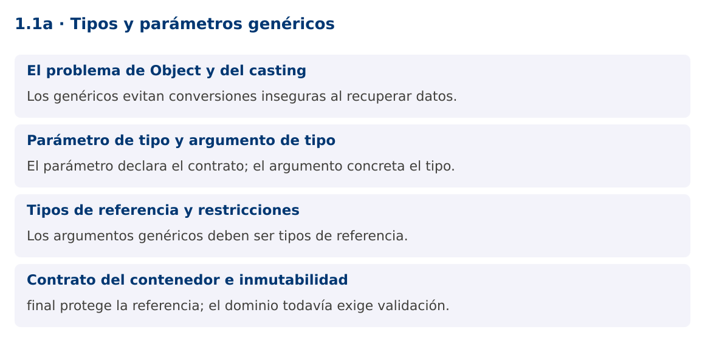

Programación Aplicada
1.1a. Tipos y parámetros genéricos

Autor: Ing. Pablo Torres, Mgtr.
Unidad: 1. Programación
genérica
Proyecto de trabajo: CampusMonitor
Inicio del curso · Presentación editable · Ver en el navegador
1. Conceptos y ejemplos
Contexto
CampusMonitor debe almacenar identificadores, nombres y lecturas de sensores. Duplicar una clase contenedora por cada tipo repite la lógica. Usar Object acepta mezclas que solo se descubren al recuperar el dato. Una clase genérica expresa la relación entre el dato que entra y el que sale, y permite comprobarla durante la compilación.
Antes de empezar
Revisa el ejemplo completo antes de implementar la PC. Las demostraciones del material se ejecutan separadas del proyecto personal.
La ilustración sirve como analogía. El contrato técnico se define en el texto y el código.
1.1. El problema de Object y del casting
Una variable de tipo Object puede referirse a un String, un Integer o un Sensor. Esa flexibilidad pierde
información en la interfaz del contenedor: al recuperar Object, quien llama debe conocer el tipo real y
convertirlo. Un cast no transforma el objeto y puede lanzar ClassCastException. La programación genérica
conserva esa relación en el contrato. El compilador comprueba que una Caja
La ventaja principal es la seguridad de tipos y la reutilización de algoritmos. Los genéricos no implican que el programa sea más rápido, ni crean una clase distinta en ejecución por cada tipo. El error se detecta cerca de la operación que lo introduce, antes de ejecutar la aplicación.
Object dato = "Aula 201";
String nombre = (String) dato;
// Integer numero = (Integer) dato; // Compila, pero falla al ejecutar.
1.2. Parámetro de tipo y argumento de tipo
En Caja
El operador diamante <> permite inferir argumentos a partir del contexto. La inferencia no convierte
Java en un lenguaje dinámico: el tipo queda establecido en compilación. Una Caja
Caja<String> ubicacion = new Caja<>("Laboratorio");
Caja<Integer> capacidad = new Caja<>(30);
String texto = ubicacion.obtener();
1.3. Tipos de referencia y restricciones
Los argumentos genéricos son tipos de referencia. Usa Integer donde el dato original sea int, y Double para
double. Java realiza boxing y unboxing cuando corresponde, tema que se desarrolla en 1.1c. Un parámetro T no
permite ejecutar new T(), acceder a miembros estáticos de un supuesto tipo concreto ni comprobar instanceof
Caja
El genérico describe qué operaciones son válidas. Sin una cota, solo están disponibles las operaciones garantizadas por Object. Si un algoritmo necesita comparar, sumar o extraer un identificador, debe expresar un contrato adicional. Las cotas y los comparadores aparecerán en los siguientes contenidos.
1.4. Contrato del contenedor e inmutabilidad
La demostración usa un campo final y rechaza null al construir la caja. final impide reasignar la referencia, pero no vuelve inmutable al objeto almacenado. Si T es una lista modificable, el contenido de esa lista todavía puede cambiar. Decide si el contenedor acepta valores nulos y documenta esa decisión.
Las validaciones del dominio siguen siendo necesarias. Caja
Mapa de conceptos

2. Demostración guiada
2.1. Problema y contrato
CampusMonitor debe almacenar identificadores, nombres y lecturas de sensores. Duplicar una clase contenedora por cada tipo repite la lógica. Usar Object acepta mezclas que solo se descubren al recuperar el dato. Una clase genérica expresa la relación entre el dato que entra y el que sale, y permite comprobarla durante la compilación.
La implementación siguiente es una demostración resuelta. La PC de la sección 3 requiere desarrollar una ampliación propia sobre CampusMonitor.
Archivo completo: TiposDemo.java.
package edu.ups.pap.u01;
import java.util.Objects;
public class TiposDemo {
static final class Caja<T> {
private final T valor;
Caja(T valor) { this.valor = Objects.requireNonNull(valor); }
T obtener() { return valor; }
}
record Sensor(String id, String ubicacion) {}
public static void main(String[] args) {
Caja<String> lugar = new Caja<>("Laboratorio 1");
Caja<Integer> limite = new Caja<>(30);
Caja<Sensor> dispositivo = new Caja<>(new Sensor("S01", lugar.obtener()));
System.out.println(dispositivo.obtener().id() + " / " + lugar.obtener());
System.out.println("Capacidad: " + limite.obtener());
System.out.println(lugar.getClass() == limite.getClass());
try { new Caja<String>(null); }
catch (NullPointerException e) { System.out.println("Valor nulo rechazado"); }
}
}
2.2. Ejecución
Desde la raíz de este repositorio, con JDK 25:
java 01/1.1-fundamentos/01-tipos/ejemplos/TiposDemo.java
Con el proyecto Gradle de demostraciones:
cd demostraciones
./gradlew runDemo -Pdemo=1.1a
En Windows usa gradlew.bat. Ejecuta cada demostración desde una terminal nueva o vuelve a la
raíz antes de cambiar de contenido.
2.3. Resultado y lectura de la ejecución
S01 / Laboratorio 1
Capacidad: 30
true
Valor nulo rechazado
- Identifica los datos iniciales y las precondiciones que la demostración valida.
- Sigue las llamadas desde
mainoloopy relaciona las operaciones con los conceptos de la sección 1. - Contrasta el resultado con la salida esperada del ejemplo. Si el orden es concurrente, compara la invariante y no el orden de impresión.
- Cambia un dato del ejemplo y predice el resultado antes de ejecutarlo. Registra cualquier diferencia y su causa.
3. PC1.1a · Práctica de clase
3.1. Ampliación del proyecto
Esta actividad se resuelve en tu repositorio icc-pap-campusmonitor-apellido. Mantén la
funcionalidad anterior. No reemplaces tu solución con los archivos de demostración del material.
- Crea el proyecto personal CampusMonitor siguiendo la guía general. Agrega Lectura
con idSensor, valor y unidad, sin utilizar Object como tipo del valor. - Construye una lectura Double de temperatura y otra Integer de ocupación. Rechaza id o unidad vacíos y valores nulos.
- Agrega un comando lecturas que muestre ambas y documenta una asignación incompatible como comentario, con el error de compilación esperado.
3.2. Comprobación y evidencia
Prueba los casos de esta sección y registra entradas, salida real y explicación. Incluye una ejecución normal y un caso de error. La evidencia debe permitir repetir el resultado desde el commit entregado.
| Caso que debes revisar | Comportamiento requerido |
|---|---|
| S01, 22.5, °C | Lectura válida y recuperada como Double |
| S02, 18, personas | Lectura válida y recuperada como Integer |
| id vacío o valor null | Error descriptivo de validación |
En evidencias/PC1.1a.md agrega: cambio realizado, archivos principales, comandos de ejecución,
tabla de pruebas y enlace al commit final. No añadas una rúbrica a esta PC.
3.3. Commits de la actividad
git status
git add src evidencias
git commit -m "feat(pc1.1a): tipos-y-parametros-genericos"
git push
git log -1 --format=%H
Ajusta las rutas de git add a los archivos que realmente creaste. Incluye también configuración
o SQL si cambiaste esos archivos. El último comando muestra el hash real que debes enlazar en tu evidencia.
Lo esencial
- Los genéricos evitan conversiones inseguras al recuperar datos.
- El parámetro declara el contrato; el argumento concreta el tipo.
- Los argumentos genéricos deben ser tipos de referencia.
- final protege la referencia; el dominio todavía exige validación.